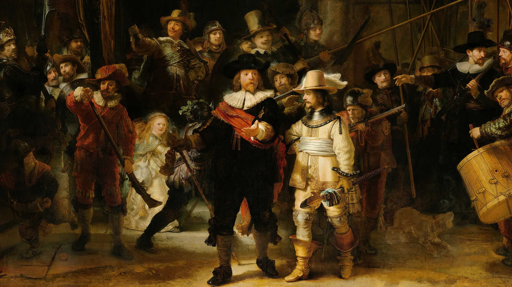
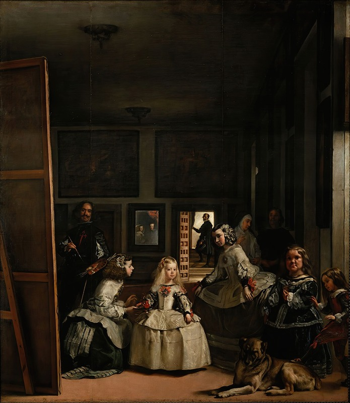
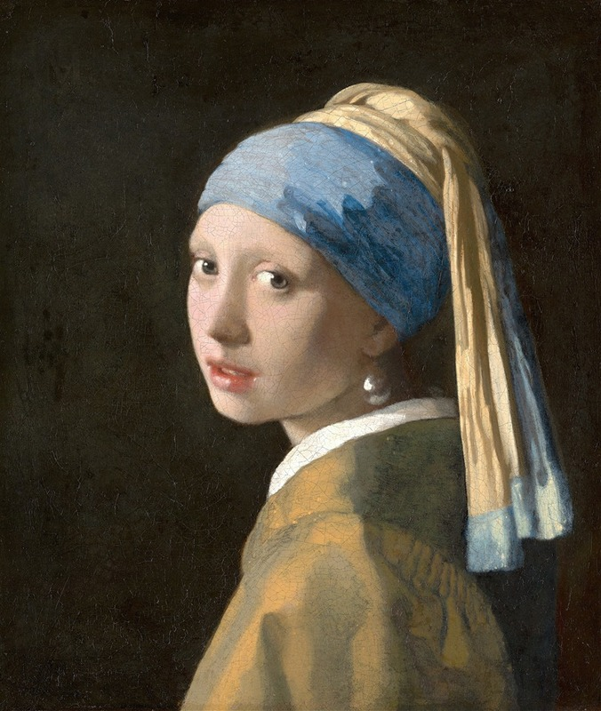
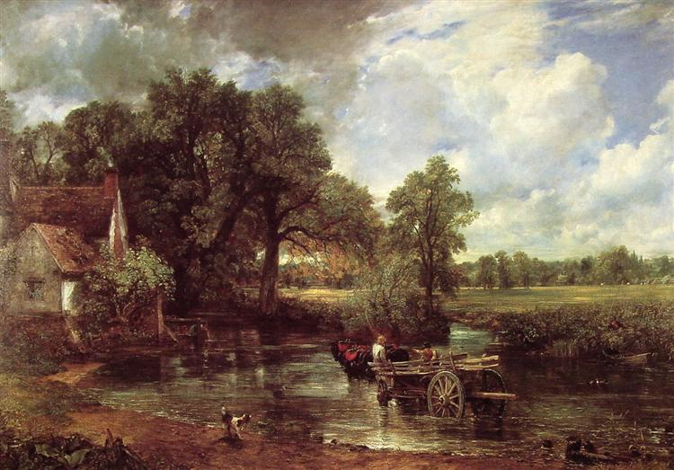
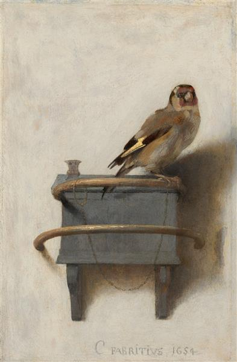

Current: “The Night Watch” by Rembrandt van Rijn
Target: “The Persistence of Memory”, Salvador Dalí
Track Your Steps
1
"The Night Watch" by Rembrandt van Rijn
?

Las Meninas
Diego Velázquez
Style (Contemporary)

Girl with a Pearl Earring
Johannes Vermeer
Influence

The Hay Wain
John Constable
Era

The Goldfinch
Carel Fabritius
Student